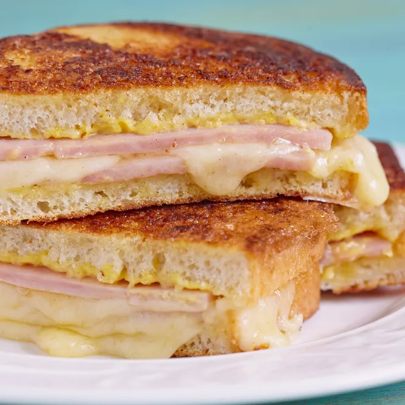

🇧🇪 Croque Monsieur
Wat is een Croque Monsieur?
Croque-monsieur is een klassiek gerecht dat zijn oorsprong vindt in Frankrijk, maar ook in België enorm populair is. Het bestaat uit twee sneetjes brood, belegd met ham en gesmolten kaas, en daarna goudbruin gegrild of gebakken tot het brood krokant is en de kaas mooi smelt. Het resultaat? Een eenvoudige maar rijke smaakcombinatie — zout, romig en licht krokant tegelijk — die perfect past bij een snelle, warme maaltijd. Dit gerecht is een vaste waarde in cafés, brasseries en thuiskeukens: makkelijk, vullend en troostend. Het wordt vaak geserveerd met een frisse salade, frietjes of een lepeltje mosterd, en is geliefd bij jong en oud.

Geschiedenis & Oorsprong

De oorsprong van de croque-monsieur ligt in het begin van de 20e eeuw in Frankrijk. In cafés en brasseries zocht men naar een snelle, warme maaltijd die eenvoudig te bereiden was. Het idee om brood te beleggen met ham en kaas en dit te grillen, bleek een groot succes. De combinatie van knapperig brood en gesmolten kaas zorgde voor een smaakvolle en vullende hap. Het gerecht werd al snel populair door zijn eenvoud en toegankelijkheid. In België vond de croque-monsieur snel zijn plaats in cafés, lunchzaken en thuiskeukens. Vandaag bestaan er verschillende varianten, maar de klassieke versie met ham en kaas blijft het meest geliefd.
Ingrediënten
Voor het stoofvlees:
- 800 g rundvlees (bv. sukade, stoofvlees of riblap)
- 2 uien
- 2 eetlepels bloem
- 1 à 2 sneetjes peperkoek (of brood)
- 1 flesje donker Belgisch bier (33 cl, bv. Leffe, Westmalle of Grimbergen Dubbel)
- 2 eetlepels azijn
- 1 eetlepel bruine suiker
- 1 eetlepel boter (of klontje vet)
- 1 laurierblad
- 1 takje tijm
- Zout & peper)
Voor de frietjes:
- 1 kg aardappelen (bv. Bintje)
- Frituurolie of ossevet
- Zout
Bereidingswijze
- Vlees voorbereiden Snijd het rundvlees in blokjes van ongeveer 3–4 cm. Kruid ze met peper en zout, en wentel ze in wat bloem voor extra binding.
- Vlees aanbakken Smelt boter in een stevige stoofpot. Bak het vlees rondom bruin, in porties zodat het niet begint te koken. Haal het vlees eruit en zet even opzij.
- Uien bakken Snijd de uien in ringen en bak ze in dezelfde pot tot ze goudbruin zijn. Strooi eventueel nog wat bloem over de uien voor een dikkere saus.
- Bier en smaakmakers toevoegen Leg het vlees terug bij de uien. Giet het bier erbij tot alles net onderstaat. Voeg de azijn, bruine suiker, laurier en tijm toe. Smeer de sneetjes peperkoek met mosterd in en leg die bovenop het vlees.
- Laten stoven Zet het vuur laag en laat het 2 à 3 uur sudderen met deksel op de pot. Roer af en toe door zodat de peperkoek mooi oplost in de saus. Het gerecht is klaar als het vlees boterzacht is en de saus dik en glanzend.
- Frietjes maken Schil de aardappelen, snijd in frieten en spoel ze. Dep droog met keukenpapier. Voorbakken op 150°C gedurende 5–6 minuten (ze mogen niet kleuren). Laat afkoelen en bak daarna op 180°C tot ze goudbruin zijn. Bestrooi met zout.
- Serveren Serveer het stoofvlees warm met de frietjes ernaast. Voeg eventueel een toefje mayonaise of een lepel appelmoes toe. En geniet van een glaasje van hetzelfde bier erbij 🍺😉